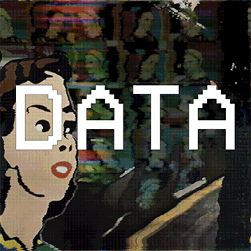
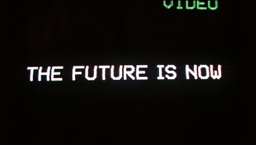

class: middle, inverse .left-column[] <div class=grande style="padding-top: 0.81em;padding-left:3em;">POSTA</div> .footnote[(o cómo obtener información útil de una fuente incierta)] --- class: center, inverse #.cyan[Manejar SIGEVA es fácil] </br> </br> .left[.footnote[]] --- class: center, middle, inverse #No pedir información que ya sepamos .left[.footnote[]] --- class: inverse #.cyan[¿Qué queremos?] </br> .pull-left[ * Incorporar al personal que no participa de convocatorias UNSAM * Datos confiables * Homogeneizar criterios entre UUAA ] .right[] .left[.footnote[]] --- class: inverse #.cyan[Hagamos Memoria] </br> 1. Memoria prototipo 2. Reunión 3. Establecer directores 4. Capacitación .left[.footnote[]] --- class: inverse #.cyan[Tareas del director] </br> 1. Identificar RRHH 2. Actualizar banco de datos 3. Compilación .right[] .left[.footnote[]] --- class: inverse #.cyan[Devolución] ## Estado de datos <div style="margin-top: 80px; margin-left: 10%">Personal registrado en Sigeva-UNSAM</div> <div class="chart "style="width: 557px;background-color:#cc00ff;margin-top: 15px">87%</div> <div style="margin-left: 10%;margin-top: 15px">Personal relevante</div> <div class="chart "style="width: 448px;background-color:#dbff00;margin-top: 15px">70%</div> <div style="margin-left: 10%;margin-top: 15px">Personal productivo</div> <div class="chart "style="width: 326px;background-color:cyan;margin-top: 15px">51%</div> .left[.footnote[]] --- class: inverse #.cyan[Devolución] ## Producción <div style="margin-top: 10px; margin-left: 10%">Artículos</div> <div class="chart" style="width: 492px;background-color:#cc00ff;margin-top: 8px">77%</div> <div style="margin-left: 10%;margin-top: 8px">Partes de libros</div> <div class="chart" style="width: 166px;background-color:#dbff00;margin-top: 8px">26%</div> <div style="margin-left: 10%;margin-top: 8px">Libros</div> <div class="chart" style="width: 89px;background-color:cyan;margin-top: 8px">14%</div> <div style="margin-left: 10%;margin-top: 8px">Trabajos en eventos CyT</div> <div class="chart" style="width: 268px;background-color:#67db20;margin-top: 8px">42%</div> <div style="margin-left: 10%;margin-top: 8px">Demás producción CyT</div> <div class="chart" style="width: 64px;background-color:#ffffff;margin-top: 8px">10%</div> <div style="margin-left: 10%;margin-top: 8px">Artículos en Scopus</div> <div class="chart" style="width: 288px;background-color:#ff0000;margin-top: 8px">45%</div> .left[.footnote[]] --- class: inverse #.cyan[Problemas] * Reticencia a actualizar datos * Demora en los plazos * Directores de memoria no responden * Módulo de Memoria poco intuitivo .center[] .left[.footnote[]] --- class: inverse #.cyan[Proyección] </br> * SESUDA *(servidor suple datos)* * Imprimir CVs docentes * Sistemas de reportes específicos </br> </br> </br> .center[] .left[.footnote[]] --- class: center, inverse #.cyan[Conclusión] <br/> <img src="./public/l3vR6aasfs0Ae3qdG.gif" width="500"> .left[.footnote[]]